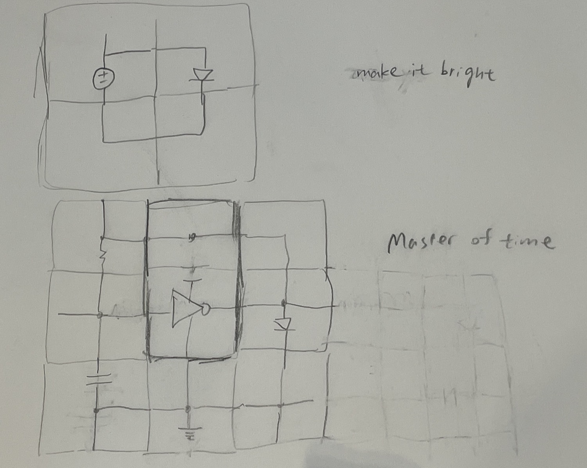

Snap-together magnetic circuit tiles. Every component — resistor, capacitor, logic gate, LED — lives inside the smallest 1×1 magnetic square, and the magnets do double duty: they hold the tiles together and carry the current. Dedicated straight, elbow, and T wire-tiles route the nets, so the circuit you snap together keeps the same floorplan as the schematic on paper. This guide builds up from a plain RC, to an inverter, to a complete LED that blinks once per second on a single 3 V coin cell.
⚡ 3 V CR2032🔁 ~1 Hz blink🧲 Magnet = wire🚫 1 × 74LVC1G14 Schmitt🟥 Red LED + R2🧵 Wire-tile routing🎨 Interactive sandbox
1. The Big Idea — magnets that carry current
Magnetic building tiles (the Magna-Tiles / Magformers family) already snap together along their edges with embedded magnets. MagTile Circuits adds one thing: a conductive contact riding on top of each edge magnet. When two tiles click together, the magnets pull the contacts into firm metal-to-metal pressure — so the same click that mechanically joins the tiles also completes the circuit.
Why this is fun
A child (or an engineer prototyping fast) builds a working circuit by snapping squares together like Lego — no breadboard, no jumper wires, no solder. Because plain wire-tiles (straight, elbow, T) carry the connections, you lay the circuit out in the same shape as its schematic. Rearranging is as fast as sliding a tile, and a whole oscillator fits in your palm.
✅ What the magnet gives you
Mechanical hold, electrical contact, and alignment — all free, all at once. Snap = connected.
⚠️ The one rule to respect
Coin cells are low-current but a dead short still gets warm. The LED always sits behind its R2 current-limit tile, and power tiles are polarity-keyed so + never meets − by accident.
2. Anatomy of a 1×1 Tile
The tile is a flat square. Along each of the four edges sits a magnet, and on top of each magnet sits a spring-loaded conductive pad. Everything electrical happens at the four edges. Inside the square, thin copper traces connect the component's two legs to whichever edges that component needs.
Left: a single tile with four edge nodes (N, S, E, W). Right: when two edges snap, opposite magnet poles (N↔S) latch and squeeze the gold pads into a solid electrical joint.
2.2 Polarity keying — you can't wire it wrong
Because magnets only latch N-to-S, the physics itself enforces orientation. Power tiles put N = +3 V on one edge family and S = GND on the other, so a battery edge will physically refuse to mate with another + edge. Signal tiles (resistor, capacitor, wire) are symmetric and can face either way. This is the same trick that keeps a USB-C plug reversible but a battery holder foolproof.
2.3 Routing tiles — straight, elbow, T
Components alone can't reach each other across a grid, so three wire-tiles do the plumbing. They carry a net from one edge to another with nothing inside but copper — the electrical equivalent of road pieces in a toy train set. With these you place each component where it sits in the schematic and simply route the wires to match.
Straight and elbow are your idea; the T-junction is the small addition needed wherever three paths meet — and in the blinker both the IN and OUT nodes are exactly that.
💬 Design call — flag for you
I added the T-tile because the blinker's IN node (inverter input + feedback + capacitor) and OUT node (inverter output + feedback + R2) each join three wires, which a straight/elbow can't do. If you'd rather keep the set to just straight + elbow, we can instead let those 3-way nodes happen on a component tile's own edge — say hello and I'll rework the floorplan that way.
2.4 Power delivery — the 2-layer VCC plane
Here's the catch a single layer can't dodge: the inverter needs four nets — IN, OUT, +V, GND — but on a real grid its north edge mates with whatever tile sits directly above it. In the blinker that neighbor is R1 (the feedback resistor), not a power rail. So "+V just taps the top edge" quietly breaks: the top edge is already carrying feedback. Any tile with an active part hits the same wall — you run out of free edges the moment power has to share the border with a signal.
The fix is to split power onto its own layer. Keep the signal circuit on Layer 1; drop the battery and a two-rail VCC / GND plane onto Layer 2 underneath. A short VCC rail tile on Layer 1 sits above the inverter and hands +V to its top edge through the ordinary edge-to-edge magnet contact — and that rail tile is fed from below by a vertical via down into the Layer-2 VCC plane. GND arrives the same way from the bottom edge. Power now reaches every tile from the plane below instead of fighting signals for border space, and the battery leaves the signal floorplan entirely.
Left: on Layer 1 the inverter takes IN/OUT on its side edges while a VCC rail tile and GND rail tile hand power to its top and bottom edges. Right: those rail tiles are fed by short vertical vias down to the battery-driven VCC/GND plane on Layer 2 — so power is delivered from below and never competes with signal routing.
✅ Why 2 layers earns its keep
Any tile with an active part (an inverter today, a flip-flop or a full logic tile tomorrow) needs more edges than a flat grid can spare once its neighbors carry signal. A dedicated power plane hands every tile a clean +V and GND from underneath, so the top layer is free to look exactly like the schematic. It also makes the battery a swappable second-layer module instead of an edge tile you have to route around.
💬 Design call — flag for you
I fed VCC to the inverter's top edge via a rail tile (your sketch), which keeps the familiar edge-to-edge contact. The alternative is a bottom-face contact: give each tile a 5th pad on its underside that taps the Layer-2 plane directly, freeing the top/bottom edges for signals too. Edge-rail is simpler to build and reuses one contact type; face-tap is denser but needs a new z-axis pad. Tell me which way to standardize and I'll carry it through the floorplan.
3. Tile Catalog
Six component tiles plus the three wire-tiles build every circuit in this guide. Each is a 1×1 square; the "Connects" column shows which edges the internal copper bridges.
Table 3 · Tiles used in this build
Tile
Symbol
What it does
Value used
Connects (edges)
🔋 Power
CR2032
Supplies +3 V and GND — lives on Layer 2 and feeds the VCC/GND plane (see §2.4)
3.0 V
VCC / GND plane
🟥 VCC rail
+V
Layer-1 tile: pulls +V up from the Layer-2 plane through a via and presents it on an edge (e.g. the inverter's top)
+3 V
via ↕ + 1 edge
⬛ GND rail
GND
Layer-1 tile: same as VCC rail but for the ground return
0 V
via ↕ + 1 edge
🚫 Inverter
▷o
Schmitt-trigger NOT gate — the one active tile; it oscillates and drives the LED
74LVC1G14
IN, OUT, +V, GND
🟫 Resistor
▭
Two used: R1 sets the RC timing (feedback), R2 limits LED current
120 kΩ / 330 Ω
W ↔ E
⚡ Capacitor
⊣⊢
The timing "tank" — fills and drains through R1
10 µF
W ↔ GND
💡 LED
▷|
Lights up; bare red LED, current set by the separate R2 tile
Red
+ ↔ −
➖ Straight wire
│
Carries a net across two opposite edges
0 Ω
N ↔ S
🔄 Elbow wire
└
Turns a net 90° between two adjacent edges
0 Ω
N ↔ E (etc.)
⑂ T-junction wire
├
Ties three edges together — a routable node
0 Ω
3 edges
💡 Design note
The inverter tile hides a tiny single-gate chip (74LVC1G14, SOT-23-5). It needs four connections — IN, OUT, +V, GND. On a single layer that fills all four edges, which is why active tiles run out of room the moment a neighbor needs to carry signal — the motivation for the 2-layer power plane in §2.4, where +V and GND come from below and leave both side edges free for IN/OUT. Passive and wire tiles only use two (or, for the T, three) edges.
4. Sandbox — build the circuit yourself 🎨
Enough reading — snap a real circuit together right here. On the left is the schematic to aim for: a battery lighting an LED around a single loop. On the right is a live tile canvas. Drag a tile from the tray onto the board (or tap a tile, then tap a cell), and close the loop. The instant current can run all the way around, the 💡 lights up. Stuck? Hit ✨ Show solution and watch the four tiles fly into place.
The target: 🔋 battery → 💡 LED → around through the wires → back to the battery.
💬 How the board maps to real tiles
The top-left cell wants the 🔋 battery tile (its + edge faces right toward the LED, − faces down), the top-right wants the 💡 LED tile, and each bottom cell a ✚ 4-way wire tile that carries the net across all four of its edges. Together they form the same loop you'd snap on a table. Tap a tile then a cell to place it, drag from the tray, click a placed wire to rotate it, and use the straight/elbow pieces to draw anything you like. The ✕ on a tile removes it.
5. Lesson 1 — The RC (charge & discharge)
Before anything blinks, feel how a resistor and capacitor make time. Snap a resistor tile between +3 V and a node, and a capacitor tile from that node to GND. The capacitor fills up like a bucket through a narrow straw (the resistor). The bucket voltage doesn't jump — it eases up on a curve.
Resistor from +V to the node, capacitor from the node to GND.The classic charging curve — fast at first, then easing toward 3 V.
🧮 The time constant τ
τ = R × C = 120,000 Ω × 0.000010 F = 1.2 seconds. After one τ the capacitor reaches ≈63% of the way; after ~5τ it's basically full. That single number is the heartbeat we'll turn into a blink.
6. Lesson 2 — The Inverter (NOT + Schmitt trigger)
An inverter flips its input: feed it LOW (0 V), it outputs HIGH (3 V), and vice-versa. Our tile uses a Schmitt-trigger inverter, which adds a crucial twist: it doesn't switch at a single voltage. It waits until the input climbs past an upper threshold before flipping down, and doesn't flip back up until the input falls below a lower threshold. That gap (hysteresis) is what lets a slow, drifting RC voltage produce a clean, snappy square wave.
The little hysteresis glyph inside the triangle marks it as a Schmitt type.
Without hysteresis, a slowly-rising RC voltage would make the output chatter/buzz right at the threshold. The upper/lower gap forces a clean, decisive flip — turning a lazy curve into a crisp on/off.
7. Lesson 3 — The 1-Second Blinker
Now combine them into a single-inverter astable oscillator — exactly the classic Schmitt-trigger blinker. Feed the inverter's output back to its own input through R1, and hang C1 on the input. The cap charges through R1 until it crosses the upper threshold → the inverter flips LOW → now the cap discharges through R1 until it crosses the lower threshold → flips HIGH again. Forever. The very same output also drives the red LED straight through R2, so the LED is simply a window onto the oscillator's square wave.
7.1 Schematic (single inverter)
Your topology: one Schmitt inverter, R1 feedback, C1 timing, and the LED driven directly off the output through R2. Five components — the smallest circuit that blinks.
✅ Why direct-drive is fine
The 74LVC1G14 has a strong push-pull output (sources/sinks tens of mA), so hanging the LED on it barely moves the output voltage — the feedback through R1 still sees a clean 0 V / 3 V swing and the timing stays put. That's why we could drop the buffer stage and match your sketch exactly.
7.2 Tile floorplan — mirrors the schematic
Here is that exact schematic rebuilt as tiles. Components keep their schematic positions; straight, elbow, and T wire-tiles carry the nets between them. Trace it against the schematic above — the feedback loop runs across the top, C1 hangs bottom-left, R2→LED drops down the right, just like on paper.
The five components sit where the schematic puts them; elbow, straight, and T wire-tiles carry the nets so the built patch reads like the drawing. +3 V / GND are shown here as light outer rails so the signal paths stay clear, but they are physically delivered from the Layer-2 VCC/GND plane (see §2.4): each tile that needs power gets it from a VCC/GND rail tile via a vertical via, not by competing for a signal edge.
7.3 What you'll see (waveform)
The cap voltage ramps between the two Schmitt thresholds; the output snaps into a square wave; the LED is on whenever OUT is HIGH — one on-off cycle per second.
7.4 Timing math — why it's 1 second
For a Schmitt-inverter RC oscillator at supply V, the period is T = R1·C1·[ln((V−VT−)/(V−VT+)) + ln(VT+/VT−)]. Plugging in the 74LVC1G14's typical thresholds at 3 V (VT+≈1.6 V, VT−≈1.0 V):
An RC does its own kind of time magic: τ = R1·C1 is the knob that slows or speeds the clock. Change one tile and the whole blink bends with it. (Original illustration — a nod to a certain time-bending sorcerer, not the film image.)
Table 7 · Period budget (R1 = 120 kΩ, C1 = 10 µF, V = 3 V)
Quantity
Expression
Value
Time constant τ
R1·C1
1.20 s
Charge factor
ln((3−1.0)/(3−1.6))
0.357
Discharge factor
ln(1.6/1.0)
0.470
Sum of factors
k
0.827
Period T
τ · k
≈ 0.99 s
Blink rate
1 / T
≈ 1.0 Hz
🎚️ Tuning
Want it faster or slower? Change one tile. Halving R1 to 62 kΩ ≈ half a second per blink; doubling C1 to 22 µF ≈ two seconds. Period scales linearly with both R1 and C1 — that's the whole lesson. R2 only sets LED brightness (smaller = brighter), never the timing.
⚠️ Real-world caveat
Coin-cell thresholds drift with temperature and chip batch, so expect ±20%. If your blink lands at 0.8 s, swap the 120 kΩ R1 for a 150 kΩ tile. This tolerance is exactly why we designed for a "round" 1 Hz rather than a precise clock.
8. Bill of Materials
Eleven tiles, about $3.83 in parts. The pie shows where the cost goes; the table ranks each line and bars the extended cost.
Cost share by tile line — the battery and the single inverter are still most of it.
Table 8 · Bill of materials — ranked by extended cost
Rank
Tile
Qty
Unit
Ext. cost
Share
#1
🔋 Power tile (CR2032)
1
$2.00
$2.00
#2
🚫 Inverter tile (74LVC1G14)
1
$0.60
$0.60
#3
🧵 Wire-tiles (straight/elbow/T)
6
$0.08
$0.48
#4
🟫 Resistor tiles (120kΩ, 330Ω)
2
$0.15
$0.30
#5
⚡ Capacitor tile (10µF)
1
$0.25
$0.25
#6
💡 LED tile (bare red)
1
$0.20
$0.20
Total
11 tiles
—
$3.83
🧾 Note
Prices are illustrative per-tile component estimates (bare parts, hobby quantities) — they don't include the 3D-printed tile shells, magnets, or contact pads, which are shared across every tile in the system.
9. Build It — step by step
Lay the power rails. Place the 🔋 Power tile at the left edge. Its N edge is +3 V (top rail), its S edge is GND (bottom rail). Every tile downstream taps these two through its own top/bottom edges.
Drop the inverter. Snap 🚫 the inverter into the center so its +V/GND edges meet the rails. Its IN edge faces left, OUT faces right.
Wrap the RC. Build the feedback loop across the top with an 🔄 elbow → 🟫 R1 (120 kΩ) → 🔄 elbow back down to OUT. Put a ⑂ T-tile at IN and at OUT to tie in the three wires. Hang ⚡ C1 (10 µF) from the IN T down to the GND rail.
Route to the LED. From the OUT T, go right through 🟫 R2 (330 Ω) → 🔄 elbow → down into the 💡 LED tile, whose − edge lands on the GND rail.
Power up. Drop the CR2032 into the holder (text side = +, up). Within a second the LED starts its steady ~1 Hz blink. 🎉
Play. Pop 🟫 R1 and swap in 62 kΩ to blink twice as fast, or a 22 µF ⚡ C1 to slow it down. Swap R2 smaller for a brighter LED. Same floorplan, new rhythm.
10. Troubleshooting
Symptom
Likely cause
Fix
🚫 LED never lights
Coin cell dead / in backwards, or a gap in the +V or GND rail
Re-seat the battery (text side = +, up), press every tile firmly until magnets click
💡 LED on steady, no blink
R1 feedback or C1 timing tile not making contact, or a T-tile flipped
Confirm R1 links OUT↔IN, C1 reaches GND, and each T-tile ties all three of its edges
⚡ Blinks way too fast/slow
Threshold spread on this chip/temperature
Swap R1 up (slower) or down (faster) one step; ±20% is normal
🟥 Dim / flickery light
Blue/white LED (3 V forward drop too high), or R2 too large
Use a red, yellow, or green LED; drop R2 toward 220 Ω for more brightness
🔥 A tile gets warm
Two power edges shorted, or R2 missing so the LED sees the full output
Remove battery, verify no + edge touches − and that R2 sits between OUT and the LED
11. Projects — challenges to try
Two open-ended builds. Each has a Part 1 you snap together straight from the catalog, and a Part 2 challenge with a hint — try it on the tiles before you peek at the answer.

From Bo's notebook — both challenges, sketched straight onto the tile grid. Top (“make it bright”): a 🔋 source tile (circle with ±) wired in a loop to an 💡 LED — that’s Project 1. Bottom (“Master of time”): an inverter tile (triangle + bubble) in the center, an ⚡ input capacitor down to GND, a 🟫 feedback resistor looping output → input, and an LED off the output — the RC oscillator of Project 2.
🔦 Project 1 — Let's make it bright
Part 1 · Build the simplest light. Snap the 🔋 CR2032 power tile straight to an 💡 LED tile with a built-in current-limit resistor (the light-emitting diode — no separate R2 needed, the resistor is baked in). Close the loop back to GND and the LED glows. That's the whole circuit: battery → LED → battery.
The starter circuit: one battery, one self-contained LED tile. Now — how much brighter can you make it?
Place the 🔋 power tile and the 💡 LED tile side by side.
Run a wire-tile from +3 V into the LED tile, and the LED's other edge back to the GND rail.
It lights. Note how bright it is — that's your baseline to beat.
🎯 Part 2 · Challenge — make it brighter
Same LED, more light. What can you add or rearrange? Hint: think about giving the LED more push (voltage), or more LEDs doing the work.
✅ Two moves that work
1. Double the battery. Stack a second CR2032 in series (6 V). More voltage across the built-in resistor → more current → the LED burns brighter. 2. LEDs in parallel. Add a second LED tile side-by-side across the same +3 V and GND. Each still gets the full 3 V and full brightness, so you get twice the total light.
⚠️ The trap — LEDs in series
Chaining two LED tiles in series makes it dimmer or dark, not brighter. Each red LED eats ~1.8–2 V, so two in a row need ~4 V — more than the 3 V cell can give. The current collapses and the light dies. Series shares the voltage; it doesn't add light.
Two LEDs across the same rails (left) each shine at full brightness; two LEDs stacked in series (right) starve on a 3 V cell. Voltage adds in series — which is why batteries in series help but LEDs in series hurt.
🕰️ Project 2 — Be a time master
Bend a second to your will. This is the full blinker from Lesson 3 — the RC oscillator is your Time Stone.
🖨️ Printable build sheet
Download the RC-oscillator PDF — a 3-page handout: the schematic, build steps and timing on page 1, a page of cut-out tile cards sized to a true 1.5 in so they register to your tiles, and a solution page showing the tiles snapped together into the working blinker floorplan. Print at 100% / Actual size (not "fit to page") and check the 1-inch scale bar.
Original illustration — a nod to a certain time-bending sorcerer, not the film image.
Part 1 · Cast the 1-second spell. Build the Lesson 3 blinker: inverter with 🟫 R1 = 120 kΩ feedback and ⚡ C1 = 10 µF, LED off the output through R2. Power up and confirm the LED blinks about once per second — count "one-Mississippi" per on-off.
Verify your timing. One full on→off→on should take ~1.0 s. If it's off, that's normal ±20% — you'll fix it in the challenge.
🎯 Part 2 · Challenge — make it blink faster
Speed time up: get the LED blinking twice as fast (about 2 blinks per second). Hint: the period is set by τ = R1 × C1 — so which one tile do you shrink?
✅ Answer — shrink R1 or C1
Period scales straight with both: T ∝ R1 · C1. Halve either tile and the blink doubles in speed.
Swap R1 120 kΩ → 62 kΩ → ~0.5 s per blink (2 Hz).
Or swap C1 10 µF → 4.7 µF → same effect.
Want it slower instead? Go the other way — bigger R1 or C1 stretches the second out. (R2 only sets LED brightness, never the speed.)
12. Next Steps & the GitHub repo
This page is the seed for the project's docs. When you're ready to put it on GitHub and link it from borenw.github.io, a clean starting layout is:
Path
Purpose
README.md
Project pitch, photo, link to the live guide
docs/index.html
This build guide (GitHub Pages serves it)
hardware/
Tile shell STLs, contact-pad footprints, magnet spec, wire-tile set
schematics/
KiCad / images of each tile and the blinker
LICENSE
e.g. CERN-OHL for hardware + MIT for docs
🔗 Linking from borenw.github.io
Once the repo has GitHub Pages enabled (Settings → Pages → docs/ folder), it publishes at https://<user>.github.io/magtile-circuits/. Add a card/link on your borenw.github.io index pointing there. Say the word and I'll generate the full repo folder — README, this index.html, and the exact git / gh commands to create and publish it.
🧩 MagTile Circuits · Edu Playground · Interactive build guide · 28 Jul 2026
Circuit: single 74LVC1G14 Schmitt-trigger RC oscillator (R1=120 kΩ, C1=10 µF) driving a red LED through R2=330 Ω on a 3 V CR2032 · target ≈1 Hz. Values are a starting point — expect ±20% and tune with one tile swap.
Page 38 · Bo's Engineering Curriculum · ↑ back to top